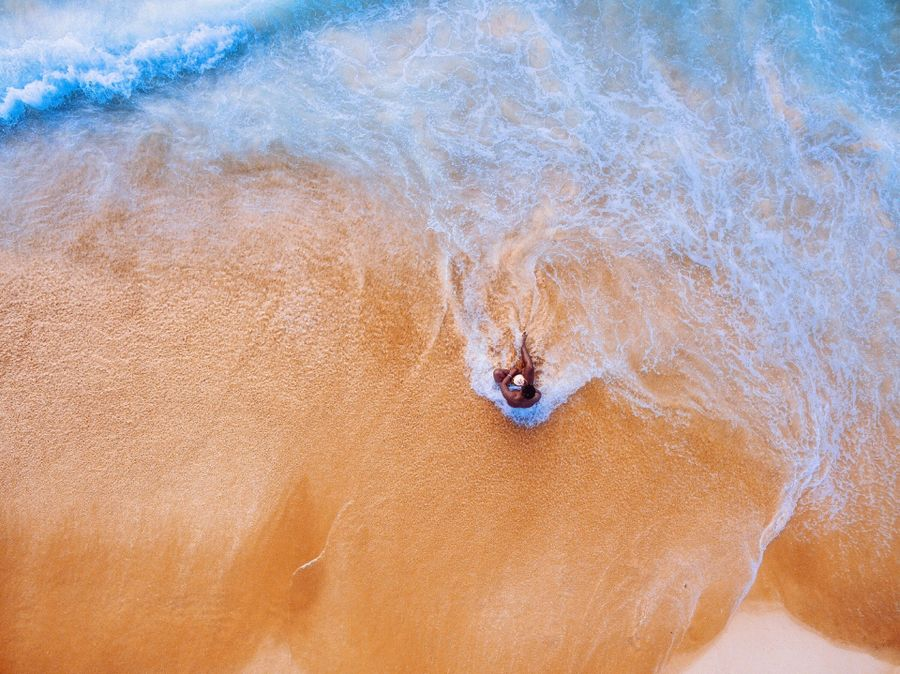
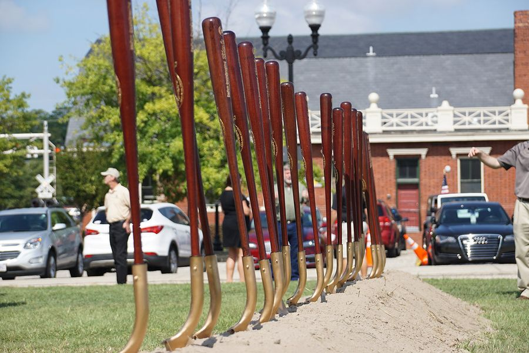

2027年の住宅ローン更新ラッシュを前にカナダ人の債務が増加、トランスユニオンが指摘Canadians’ debt rising ahead of 2027 mortgage renewal wave, says TransUnion2027年に住宅ローン更新の波が予想される中、新たな報告書はカナダ人がかつてないほどの債務を抱えていることを示している。そして住宅ローン以外の債務が急速に増えている。
2027年の住宅ローン更新ラッシュを前にカナダ人の債務が増加、トランスユニオンが指摘Canadians’ debt rising ahead of 2027 mortgage renewal wave, says TransUnion2027年に住宅ローン更新の波が予想される中、新たな報告書はカナダ人がかつてないほどの債務を抱えていることを示している。そして住宅ローン以外の債務が急速に増えている。 元保守党議員、選挙運動妨害の疑いで自由党ボランティアを提訴Ex-Conservative MP sues Liberal volunteer over alleged election campaign interference元保守党議員が自由党ボランティアを提訴し、その男性が偽のウェブサイトを作成し、「悪意のある」「計算された」計画で自身の…を妨害したと非難している。
元保守党議員、選挙運動妨害の疑いで自由党ボランティアを提訴Ex-Conservative MP sues Liberal volunteer over alleged election campaign interference元保守党議員が自由党ボランティアを提訴し、その男性が偽のウェブサイトを作成し、「悪意のある」「計算された」計画で自身の…を妨害したと非難している。 ボストンの男性、宝くじで100万米ドル当選 数日後、ICEに逮捕されるA Boston man won $1M US in the lottery. Days later, ICE arrested himアリエル・アントニオ・ベラスケス＝モラレス氏がスクラッチくじで100万米ドルを当てたと、マサチューセッツ州宝くじが土曜日に発表した。3日後、彼は逮捕されたが、その逮捕したのは
ボストンの男性、宝くじで100万米ドル当選 数日後、ICEに逮捕されるA Boston man won $1M US in the lottery. Days later, ICE arrested himアリエル・アントニオ・ベラスケス＝モラレス氏がスクラッチくじで100万米ドルを当てたと、マサチューセッツ州宝くじが土曜日に発表した。3日後、彼は逮捕されたが、その逮捕したのは ノバスコシア州、停滞中のニュー・ウォーターフォード医療センター事業に月額31,000ドルを支払うNova Scotia paying $31K a month for stalled New Waterford health-care centre project新民主党（NDP）は、入手した文書から、進歩保守党（PC）政権が医療センター事業のために建設会社へ月額31,555ドルを支払ってきたことが分かると述べている。その事業は
ノバスコシア州、停滞中のニュー・ウォーターフォード医療センター事業に月額31,000ドルを支払うNova Scotia paying $31K a month for stalled New Waterford health-care centre project新民主党（NDP）は、入手した文書から、進歩保守党（PC）政権が医療センター事業のために建設会社へ月額31,555ドルを支払ってきたことが分かると述べている。その事業は フォード氏とUnifor、オタワにカナダの自動車メーカーを排ガス汚染の罰則から免除するよう要請Ford, Unifor call on Ottawa to exempt Canadian automakers from exhaust pollution penaltiesオンタリオ州のダグ・フォード首相とUniforのラナ・ペイン会長は、政府の基準を遵守しなかったことに対する罰則から自動車メーカーを免除するようオタワに求めている
フォード氏とUnifor、オタワにカナダの自動車メーカーを排ガス汚染の罰則から免除するよう要請Ford, Unifor call on Ottawa to exempt Canadian automakers from exhaust pollution penaltiesオンタリオ州のダグ・フォード首相とUniforのラナ・ペイン会長は、政府の基準を遵守しなかったことに対する罰則から自動車メーカーを免除するようオタワに求めている ハリファックスの量販店で人種差別的な暴言を吐く様子を動画に撮られた男、無罪を主張Man accused of racist tirade caught on video in a Halifax box store pleads not guilty37歳のランドール・パブリカバー氏の弁護士は本日、ハリファックス州裁判所で依頼人に代わって無罪を主張した。
ハリファックスの量販店で人種差別的な暴言を吐く様子を動画に撮られた男、無罪を主張Man accused of racist tirade caught on video in a Halifax box store pleads not guilty37歳のランドール・パブリカバー氏の弁護士は本日、ハリファックス州裁判所で依頼人に代わって無罪を主張した。 GLP-1薬による視力喪失の「非常にまれ」なリスクは、実際どれほどまれなのか？How rare is the ‘very rare’ risk of vision loss from GLP-1 drugs?カナダ保健省は水曜日、処方薬のセマグルチドの使用と、視力喪失を引き起こす疾患との間に「関連の可能性」があることを発見したと発表した。
GLP-1薬による視力喪失の「非常にまれ」なリスクは、実際どれほどまれなのか？How rare is the ‘very rare’ risk of vision loss from GLP-1 drugs?カナダ保健省は水曜日、処方薬のセマグルチドの使用と、視力喪失を引き起こす疾患との間に「関連の可能性」があることを発見したと発表した。 ダグ・フォード氏、オンタリオ州民にあらゆる手段で住宅侵入から身を守るよう助言Doug Ford advises Ontarians to protect against home invasions by any meansダグ・フォード氏は木曜日、相次ぐ住宅侵入に対応するための法改正を望んでいると述べ、当面はあらゆる…で家族を守るよう人々に助言した。
ダグ・フォード氏、オンタリオ州民にあらゆる手段で住宅侵入から身を守るよう助言Doug Ford advises Ontarians to protect against home invasions by any meansダグ・フォード氏は木曜日、相次ぐ住宅侵入に対応するための法改正を望んでいると述べ、当面はあらゆる…で家族を守るよう人々に助言した。 イラン人ジャーナリストでオスカー候補の脚本家メフディ・マフムーディアン氏、テヘランで逮捕Iranian journalist, Oscar-nominated screenwriter Mehdi Mahmoudian arrested in Tehran人権団体は、イラン当局がフリーランスのジャーナリストでオスカー候補の脚本家メフディ・マフムーディアン氏を逮捕したことを受け、同氏の釈放を求めている
イラン人ジャーナリストでオスカー候補の脚本家メフディ・マフムーディアン氏、テヘランで逮捕Iranian journalist, Oscar-nominated screenwriter Mehdi Mahmoudian arrested in Tehran人権団体は、イラン当局がフリーランスのジャーナリストでオスカー候補の脚本家メフディ・マフムーディアン氏を逮捕したことを受け、同氏の釈放を求めている 保守党、首相夫人ダイアナ・フォックス・カーニー氏に海洋担当特使としての役割について議会で証言するよう求めるConservatives want PM's wife Diana Fox Carney to testify to Parliament on oceans role保守党は、マーク・カーニー首相の夫人に、海洋担当特使としての役割について議会で証言するよう求めている。
保守党、首相夫人ダイアナ・フォックス・カーニー氏に海洋担当特使としての役割について議会で証言するよう求めるConservatives want PM's wife Diana Fox Carney to testify to Parliament on oceans role保守党は、マーク・カーニー首相の夫人に、海洋担当特使としての役割について議会で証言するよう求めている。 珍しい3日間の休みでラプターズが振り返り、立て直しへRare three-day break lets Raptors reflect, resetアメリカの感謝祭と重なった珍しい3日間の休みにより、スコッティ・バーンズとトロント・ラプターズのチームメートは立ち止まり、立て直す機会を得た
珍しい3日間の休みでラプターズが振り返り、立て直しへRare three-day break lets Raptors reflect, resetアメリカの感謝祭と重なった珍しい3日間の休みにより、スコッティ・バーンズとトロント・ラプターズのチームメートは立ち止まり、立て直す機会を得た カーニー氏、勝算の薄い補欠選挙での勝利を目指しサスカチュワン州で遊説Carney in Saskatchewan to campaign for long-shot byelection winマーク・カーニー首相は、近く行われるヨークトン―メルビル選挙区の連邦補欠選挙に向けた遊説のため、ヨークトンを訪れている。
カーニー氏、勝算の薄い補欠選挙での勝利を目指しサスカチュワン州で遊説Carney in Saskatchewan to campaign for long-shot byelection winマーク・カーニー首相は、近く行われるヨークトン―メルビル選挙区の連邦補欠選挙に向けた遊説のため、ヨークトンを訪れている。 原油価格の急騰で、アルバータ州の94億ドルの赤字見通しが85億ドルの黒字に転じる見込みOil price surge expected to flip Alberta's projected $9.4B deficit into $8.5B surplusアルバータ州政府は、石油資源に恵まれた同州が今年、過去最高の資源収入を達成する見通しだと述べている。
原油価格の急騰で、アルバータ州の94億ドルの赤字見通しが85億ドルの黒字に転じる見込みOil price surge expected to flip Alberta's projected $9.4B deficit into $8.5B surplusアルバータ州政府は、石油資源に恵まれた同州が今年、過去最高の資源収入を達成する見通しだと述べている。 ダグ・フォード氏、住宅侵入に「反撃」するよう人々に呼びかけDoug Ford encourages people to 'fight back' against home invasions州首相は銃を所有しており、自宅に侵入しようとする者に対してためらわずに使うと述べ、銃を持たない人にはナイフや野球のバットを使うよう勧めている…
ダグ・フォード氏、住宅侵入に「反撃」するよう人々に呼びかけDoug Ford encourages people to 'fight back' against home invasions州首相は銃を所有しており、自宅に侵入しようとする者に対してためらわずに使うと述べ、銃を持たない人にはナイフや野球のバットを使うよう勧めている… ダグ・フォード氏、オンタリオ州民に住宅侵入への「反撃」を呼びかけDoug Ford encourages Ontarians to 'fight back' against home invasions州首相は、自身が銃を所有しており、自宅に侵入しようとする者に対してはためらわず使用すると述べ、銃を持たない人にはナイフや野球バットを使うよう助言した。B.C.ライオンズ、本拠地スタジアムの所有または運営を希望B.C. Lions want to own or operate home stadiumB.C.ライオンズのオーナーは、このCFLチームがバンクーバーにある本拠地スタジアム、BCプレイスの所有または運営に関心があると述べた。
ダグ・フォード氏、オンタリオ州民に住宅侵入への「反撃」を呼びかけDoug Ford encourages Ontarians to 'fight back' against home invasions州首相は、自身が銃を所有しており、自宅に侵入しようとする者に対してはためらわず使用すると述べ、銃を持たない人にはナイフや野球バットを使うよう助言した。B.C.ライオンズ、本拠地スタジアムの所有または運営を希望B.C. Lions want to own or operate home stadiumB.C.ライオンズのオーナーは、このCFLチームがバンクーバーにある本拠地スタジアム、BCプレイスの所有または運営に関心があると述べた。 黒人やラテンアメリカ系の人々、低所得者はかかりつけ医を持ちにくい：報告書Black and Latin American people, those with low-incomes, less likely to have a family doctor: reportかかりつけ医を見つけるのに苦労している人々の話をよく耳にするが、カナダ保健情報研究所の新たな報告書は、その困難の度合いがさまざまであることを示している
黒人やラテンアメリカ系の人々、低所得者はかかりつけ医を持ちにくい：報告書Black and Latin American people, those with low-incomes, less likely to have a family doctor: reportかかりつけ医を見つけるのに苦労している人々の話をよく耳にするが、カナダ保健情報研究所の新たな報告書は、その困難の度合いがさまざまであることを示している 戦闘機の見直しが長引く中、カナダがF-35にさらに資金を投じるCanada puts more money down on F-35s as fighter review drags onカナダはF-35の部品について追加の支払いを行い、当初の88機購入に関する見直しが続いているにもかかわらず、48機のステルス戦闘機の潜在的な機体数を確保した。
戦闘機の見直しが長引く中、カナダがF-35にさらに資金を投じるCanada puts more money down on F-35s as fighter review drags onカナダはF-35の部品について追加の支払いを行い、当初の88機購入に関する見直しが続いているにもかかわらず、48機のステルス戦闘機の潜在的な機体数を確保した。 アンジェリーナ・ジョリーとブラッド・ピット、虐待疑惑を浮上させたワイナリー紛争で和解Angelina Jolie and Brad Pitt settle winery dispute that exposed abuse allegations両俳優は共同声明で、訴訟が和解したと述べ、この訴訟はジョリーによる法的申立てで虐待疑惑が浮上したことで、ビジネスの問題を超えたものとなっていた
アンジェリーナ・ジョリーとブラッド・ピット、虐待疑惑を浮上させたワイナリー紛争で和解Angelina Jolie and Brad Pitt settle winery dispute that exposed abuse allegations両俳優は共同声明で、訴訟が和解したと述べ、この訴訟はジョリーによる法的申立てで虐待疑惑が浮上したことで、ビジネスの問題を超えたものとなっていた 女性に対する暴力撤廃国際デーに数千人が行進Thousands march during International Day for the Elimination of Violence Against Women水曜日、女性に対する暴力撤廃国際デーを記念し、世界各地で開かれたイベントで数千人が行進した。その様子の一部を紹介する
女性に対する暴力撤廃国際デーに数千人が行進Thousands march during International Day for the Elimination of Violence Against Women水曜日、女性に対する暴力撤廃国際デーを記念し、世界各地で開かれたイベントで数千人が行進した。その様子の一部を紹介する スタンピーダーズ、守備担当にソープを起用Stampeders hire Thorpe to run defenceCFLのカルガリー・スタンピーダーズは木曜日、ノエル・ソープをチームの新たな守備コーディネーター兼ディフェンシブバックコーチに起用したと発表した。
スタンピーダーズ、守備担当にソープを起用Stampeders hire Thorpe to run defenceCFLのカルガリー・スタンピーダーズは木曜日、ノエル・ソープをチームの新たな守備コーディネーター兼ディフェンシブバックコーチに起用したと発表した。 中古車価格が下落している――その要因とはUsed-car prices are falling — here’s what’s driving the decline最近の報告によると、カナダでは中古車がより手頃な価格になりつつある一方、生活費の負担が続く中、購入を検討している人々は買い控えている可能性がある。
中古車価格が下落している――その要因とはUsed-car prices are falling — here’s what’s driving the decline最近の報告によると、カナダでは中古車がより手頃な価格になりつつある一方、生活費の負担が続く中、購入を検討している人々は買い控えている可能性がある。 勤務約60年、退職したCBSA職員が「ブース」でのエピソードを語るAfter nearly 6 decades on the job, this retired CBSA officer shares stories from 'the booth'採用されたのは18歳になる前で、アン・マリー・ハンドサー氏はオンタリオ州ウィンザーとミシガン州デトロイトの間の国境の安全確保に携わり、勤務時間の多くをカナダ
勤務約60年、退職したCBSA職員が「ブース」でのエピソードを語るAfter nearly 6 decades on the job, this retired CBSA officer shares stories from 'the booth'採用されたのは18歳になる前で、アン・マリー・ハンドサー氏はオンタリオ州ウィンザーとミシガン州デトロイトの間の国境の安全確保に携わり、勤務時間の多くをカナダ U2、NFLハーフタイムのパフォーマンスでドリー・パートンに敬意を表すU2 salutes Dolly Parton in NFL halftime performanceU2は水曜の夜、L近郊で行われたNFLの試合のハーフタイムで、故人の音楽アイコンをフィーチャーした新曲を演奏し、ドリー・パートンへ感動的な敬意を表した。
U2、NFLハーフタイムのパフォーマンスでドリー・パートンに敬意を表すU2 salutes Dolly Parton in NFL halftime performanceU2は水曜の夜、L近郊で行われたNFLの試合のハーフタイムで、故人の音楽アイコンをフィーチャーした新曲を演奏し、ドリー・パートンへ感動的な敬意を表した。 オンタリオ州、近く電動自転車に免許、登録、保険を義務付けへOntario will soon require licence, registration, insurance for e-bikes一部の電動自転車の運転者は近く、オンタリオ州の道路を走行するために運転免許証、車両登録、保険を取得しなければならなくなる、とプラブミート・サ運輸相
オンタリオ州、近く電動自転車に免許、登録、保険を義務付けへOntario will soon require licence, registration, insurance for e-bikes一部の電動自転車の運転者は近く、オンタリオ州の道路を走行するために運転免許証、車両登録、保険を取得しなければならなくなる、とプラブミート・サ運輸相 バブコック監督、戦いで疲弊したオイラーズに休息を指示Babcock prescribes rest for battle-weary Oilersエドモントン・オイラーズのマイク・バブコック監督は、過酷な2週間の日程で疲労した選手たちに、疲れた体を休めるため木曜日は休むよう伝えた
バブコック監督、戦いで疲弊したオイラーズに休息を指示Babcock prescribes rest for battle-weary Oilersエドモントン・オイラーズのマイク・バブコック監督は、過酷な2週間の日程で疲労した選手たちに、疲れた体を休めるため木曜日は休むよう伝えた B.C.ライオンズ、2029年のグレイ・カップを開催へB.C. Lions to host Grey Cup in 2029カナディアン・フットボール・リーグは、B.C.ライオンズが2029年に第116回グレイ・カップを開催すると発表した。
B.C.ライオンズ、2029年のグレイ・カップを開催へB.C. Lions to host Grey Cup in 2029カナディアン・フットボール・リーグは、B.C.ライオンズが2029年に第116回グレイ・カップを開催すると発表した。 オンタリオ州の一部に着氷性の雨に関する特別注意報Parts of Ontario under freezing rain special advisoryカナダ環境省は木曜日早朝、オンタリオ州各地に複数の着氷性の雨に関する注意報を発表した。低気圧が…頃に同地域へ入ってくる見込みだという。
オンタリオ州の一部に着氷性の雨に関する特別注意報Parts of Ontario under freezing rain special advisoryカナダ環境省は木曜日早朝、オンタリオ州各地に複数の着氷性の雨に関する注意報を発表した。低気圧が…頃に同地域へ入ってくる見込みだという。 オンタリオ州の道路を走るオートバイ型・スクーター型電動自転車に近く厳しい規制Motorcycle and scooter-style e-bikes on Ontario roads to soon face stiffer rulesオンタリオ州でオートバイ型およびモータースクーター型の電動自転車の運転者は、近く、道路で車両を運転するために免許、登録、保険の取得が必要になる。
オンタリオ州の道路を走るオートバイ型・スクーター型電動自転車に近く厳しい規制Motorcycle and scooter-style e-bikes on Ontario roads to soon face stiffer rulesオンタリオ州でオートバイ型およびモータースクーター型の電動自転車の運転者は、近く、道路で車両を運転するために免許、登録、保険の取得が必要になる。 CFL、2029年グレイ・カップの開催地にバンクーバーを発表CFL announces Vancouver as host of 2029 Grey CupバンクーバーとB.C.ライオンズが、BCプレイスで2029年グレイ・カップを開催する。
CFL、2029年グレイ・カップの開催地にバンクーバーを発表CFL announces Vancouver as host of 2029 Grey CupバンクーバーとB.C.ライオンズが、BCプレイスで2029年グレイ・カップを開催する。 ニューブランズウィック州の地域社会、工場を閉鎖した所有者から土地を収用する計画New Brunswick community plans to expropriate land from owner that closed millニューブランズウィック州の小さな地域社会は、将来を見据え、最近閉鎖されたパルプ工場周辺の土地を収用する計画だと述べている
ニューブランズウィック州の地域社会、工場を閉鎖した所有者から土地を収用する計画New Brunswick community plans to expropriate land from owner that closed millニューブランズウィック州の小さな地域社会は、将来を見据え、最近閉鎖されたパルプ工場周辺の土地を収用する計画だと述べている ピールとトロント各地で高級車を狙った住宅侵入事件で2人を逮捕Two arrested in home invasions targeting luxury vehicles across Peel, Torontoブランプトン、ミシサガ、トロント各地で高級車を狙った5件の住宅侵入事件の捜査で、2人が逮捕された。
ピールとトロント各地で高級車を狙った住宅侵入事件で2人を逮捕Two arrested in home invasions targeting luxury vehicles across Peel, Torontoブランプトン、ミシサガ、トロント各地で高級車を狙った5件の住宅侵入事件の捜査で、2人が逮捕された。 マーク・カーニー首相、12月の補欠選挙を前にサスカチュワン州ヨークトンを訪問Prime Minister Mark Carney visits Yorkton, Sask., ahead of December byelection現職首相がヨークトンを訪れたのは2010年が最後で、当時はスティーブン・ハーパー首相が壊滅的な洪水の後に同地域を訪問した。
マーク・カーニー首相、12月の補欠選挙を前にサスカチュワン州ヨークトンを訪問Prime Minister Mark Carney visits Yorkton, Sask., ahead of December byelection現職首相がヨークトンを訪れたのは2010年が最後で、当時はスティーブン・ハーパー首相が壊滅的な洪水の後に同地域を訪問した。 デュラン・デュランのギタリスト、アンディ・テイラーが65歳で死去Andy Taylor, Duran Duran guitarist, dead at 65アンディ・テイラーの死去は、ソーシャルメディアとデュラン・デュランの公式ウェブサイトに投稿された声明で、家族とバンドメンバーによって確認された。
デュラン・デュランのギタリスト、アンディ・テイラーが65歳で死去Andy Taylor, Duran Duran guitarist, dead at 65アンディ・テイラーの死去は、ソーシャルメディアとデュラン・デュランの公式ウェブサイトに投稿された声明で、家族とバンドメンバーによって確認された。 フォード氏とユニフォー、カナダの自動車メーカーを温室効果ガス罰則の適用除外とするよう求めるFord, Unifor call for Canadian automakers to be exempt from GHG penaltiesオンタリオ州のダグ・フォード首相とユニフォー全国会長のラナ・ペイン氏は、温室効果ガス排出規制がカナダの自動車部門に「多大なコスト」をもたらすと述べた
フォード氏とユニフォー、カナダの自動車メーカーを温室効果ガス罰則の適用除外とするよう求めるFord, Unifor call for Canadian automakers to be exempt from GHG penaltiesオンタリオ州のダグ・フォード首相とユニフォー全国会長のラナ・ペイン氏は、温室効果ガス排出規制がカナダの自動車部門に「多大なコスト」をもたらすと述べた カナダ人の4人に3人が1日以内にかかりつけ医の診察を受けられない、報告書で判明3 in 4 Canadians can’t see their family doctor within a day, report findsカナダ保健情報研究所は木曜日、カナダのプライマリケアの現状に関する2026年の年次報告書を発表した。
カナダ人の4人に3人が1日以内にかかりつけ医の診察を受けられない、報告書で判明3 in 4 Canadians can’t see their family doctor within a day, report findsカナダ保健情報研究所は木曜日、カナダのプライマリケアの現状に関する2026年の年次報告書を発表した。 トレイシー・デウェア氏がニューブランズウィック州首席判事に任命、首相が発表Tracey DeWare appointed New Brunswick chief justice, prime minister saysトレイシー・デウェア氏は、8月に業務負担の軽減を選んだ前首席判事マーク・リチャード氏の後任となる。
トレイシー・デウェア氏がニューブランズウィック州首席判事に任命、首相が発表Tracey DeWare appointed New Brunswick chief justice, prime minister saysトレイシー・デウェア氏は、8月に業務負担の軽減を選んだ前首席判事マーク・リチャード氏の後任となる。 アルバータ州の保健当局、CFBウェインライトで負傷した兵士について最新情報を提供へAlberta health officials to provide update on soldiers wounded at CFB Wainwright
アルバータ州の保健当局、CFBウェインライトで負傷した兵士について最新情報を提供へAlberta health officials to provide update on soldiers wounded at CFB Wainwright モントリオール市長のKDゲート続く、Kraft Dinner発言を揶揄するウェブサイトも登場KDgate for Montreal mayor continues with website mocking Kraft Dinner comments箱入りの論争：モントリオール市長ソラヤ・マルティネス・フェラダ氏のKraft Dinnerに関する発言が、ウェブサイトの開設と市庁舎での即興の抗議を引き起こした。
モントリオール市長のKDゲート続く、Kraft Dinner発言を揶揄するウェブサイトも登場KDgate for Montreal mayor continues with website mocking Kraft Dinner comments箱入りの論争：モントリオール市長ソラヤ・マルティネス・フェラダ氏のKraft Dinnerに関する発言が、ウェブサイトの開設と市庁舎での即興の抗議を引き起こした。 クウェートでのイランのドローン攻撃でイタリア人2人が死亡、イタリアが発表2 Italians killed in Iranian drone attack in Kuwait, Italy saysイタリアの外相は、木曜日にクウェートで起きたイランのドローン攻撃でイタリア人2人が死亡したと述べ、犠牲者は…で働く技術者だったと付け加えた
クウェートでのイランのドローン攻撃でイタリア人2人が死亡、イタリアが発表2 Italians killed in Iranian drone attack in Kuwait, Italy saysイタリアの外相は、木曜日にクウェートで起きたイランのドローン攻撃でイタリア人2人が死亡したと述べ、犠牲者は…で働く技術者だったと付け加えた フェデックス機がマイアミ空港で滑走路を逸脱、1本を除く全滑走路が閉鎖FedEx plane goes off runway at Miami airport, all but 1 runway closedこの事故は、アマゾンの貨物ジェット機がマイアミの別の滑走路をオーバーランし、地上にいた5人が死亡した事故から、ほぼ3か月後に起きた。
フェデックス機がマイアミ空港で滑走路を逸脱、1本を除く全滑走路が閉鎖FedEx plane goes off runway at Miami airport, all but 1 runway closedこの事故は、アマゾンの貨物ジェット機がマイアミの別の滑走路をオーバーランし、地上にいた5人が死亡した事故から、ほぼ3か月後に起きた。 米国、宇宙のデータセンター向けに100万基の衛星を配備するSpaceXの計画を承認U.S. approves SpaceX plan to deploy 1 million satellites for data centres in space連邦通信委員会（FCC）は、イーロン・マスク氏のSpaceXに対し、宇宙のデータセンター向けに100万基の衛星からなるコンステレーションの配備を認可している
米国、宇宙のデータセンター向けに100万基の衛星を配備するSpaceXの計画を承認U.S. approves SpaceX plan to deploy 1 million satellites for data centres in space連邦通信委員会（FCC）は、イーロン・マスク氏のSpaceXに対し、宇宙のデータセンター向けに100万基の衛星からなるコンステレーションの配備を認可している コール・オブ・ザ・ワイルド：モントリオール・カナディアンズ、コロラド・アバランチに屈辱的な敗北Call of the Wilde: Montreal Canadiens embarrassed by the Colorado Avalancheモントリオール・カナディアンズは今シーズン最悪のパフォーマンスを見せた。デンバーでコロラド・アバランチに0対6で敗れ、まさにひどい内容だった。
コール・オブ・ザ・ワイルド：モントリオール・カナディアンズ、コロラド・アバランチに屈辱的な敗北Call of the Wilde: Montreal Canadiens embarrassed by the Colorado Avalancheモントリオール・カナディアンズは今シーズン最悪のパフォーマンスを見せた。デンバーでコロラド・アバランチに0対6で敗れ、まさにひどい内容だった。 コンゴでエボラの症例数が1万2000件に、記録上2番目に大きな流行が拡大Ebola cases reach 12,000 in Congo as second-largest outbreak on record growsコンゴ民主共和国で確認されたエボラの症例数が1万2000件を超えたことが、木曜日に示された政府データで明らかになった。対応に当たる人々が依然として苦戦を続ける中…
コンゴでエボラの症例数が1万2000件に、記録上2番目に大きな流行が拡大Ebola cases reach 12,000 in Congo as second-largest outbreak on record growsコンゴ民主共和国で確認されたエボラの症例数が1万2000件を超えたことが、木曜日に示された政府データで明らかになった。対応に当たる人々が依然として苦戦を続ける中… 葬儀業者のボス「アンダーテイカー」、トロントのマフィア捜査に伴う警察の監視で確認されるFuneral boss 'The Undertaker' seen in police surveillance amid Toronto mafia probe
葬儀業者のボス「アンダーテイカー」、トロントのマフィア捜査に伴う警察の監視で確認されるFuneral boss 'The Undertaker' seen in police surveillance amid Toronto mafia probe FIFAのハッカーが「業務情報と個人情報」にアクセスしていたと同組織が発表FIFA hackers had access to ‘business and personal information,’ organization saysこの侵害は、ワールドカップの持分を売却しようとする秘密裏の計画が頓挫し、FIFAとその会長ジャンニ・インファンティーノが厳しい目を向けられている時期に起きた
FIFAのハッカーが「業務情報と個人情報」にアクセスしていたと同組織が発表FIFA hackers had access to ‘business and personal information,’ organization saysこの侵害は、ワールドカップの持分を売却しようとする秘密裏の計画が頓挫し、FIFAとその会長ジャンニ・インファンティーノが厳しい目を向けられている時期に起きた ブルー・ロデオ、ミッドタウンの住宅侵入事件で殺害された「偉大なトロントの音楽家」を追悼Blue Rodeo honours ‘great Toronto musician’ killed in midtown home invasion住宅侵入事件で殺害されたトロントの音楽家はペダルスティールギターの「まさに魔術師」だったと、カナダの象徴的なバンド、ブルー・ロデオは語っている。
ブルー・ロデオ、ミッドタウンの住宅侵入事件で殺害された「偉大なトロントの音楽家」を追悼Blue Rodeo honours ‘great Toronto musician’ killed in midtown home invasion住宅侵入事件で殺害されたトロントの音楽家はペダルスティールギターの「まさに魔術師」だったと、カナダの象徴的なバンド、ブルー・ロデオは語っている。
メンタルヘルスの懸念で押収された銃器は、タンブラー・リッジ事件のように、どのように返還されるのか？How do firearms seized over mental health concerns get returned, like in the Tumbler Ridge case?タンブラー・リッジ事件の加害者の自宅から持ち去られた押収銃器の返還をめぐり、多くの議論が起きている。特に最近の米国の裁判所の…を受けて、議論が活発化している NDP議員団はビクトリアで宣誓へ、一方イービー氏は別途宣誓へNDP caucus to take oath in Victoria while Eby to be sworn in separately新民主党の議員らは木曜日にブリティッシュコロンビア州議会で就任宣誓を行うが、デイビッド・イービー前州首相はその中に含まれない。
NDP議員団はビクトリアで宣誓へ、一方イービー氏は別途宣誓へNDP caucus to take oath in Victoria while Eby to be sworn in separately新民主党の議員らは木曜日にブリティッシュコロンビア州議会で就任宣誓を行うが、デイビッド・イービー前州首相はその中に含まれない。 気象観測所、ブリティッシュコロンビア州の最新の豪雨で469ミリの降雨を記録Weather station records 469 millimetres of rain in latest B.C. soakingカナダ環境省によると、ブリティッシュコロンビア州が豪雨に見舞われ続ける中、バンクーバー島の西にある気象観測所では2日余りで469ミリの雨が降った。
気象観測所、ブリティッシュコロンビア州の最新の豪雨で469ミリの降雨を記録Weather station records 469 millimetres of rain in latest B.C. soakingカナダ環境省によると、ブリティッシュコロンビア州が豪雨に見舞われ続ける中、バンクーバー島の西にある気象観測所では2日余りで469ミリの雨が降った。 オタワ・レッドブラックス、1シーズンでヘッドコーチ兼GMのライアン・ディンウィディーを解任Ottawa Redblacks fire coach, GM Ryan Dinwiddie after 1 seasonオタワ・レッドブラックスは、ヘッドコーチ兼ゼネラルマネージャーのライアン・ディンウィディーを、1シーズンで1勝しか挙げられなかったとして解任した。
オタワ・レッドブラックス、1シーズンでヘッドコーチ兼GMのライアン・ディンウィディーを解任Ottawa Redblacks fire coach, GM Ryan Dinwiddie after 1 seasonオタワ・レッドブラックスは、ヘッドコーチ兼ゼネラルマネージャーのライアン・ディンウィディーを、1シーズンで1勝しか挙げられなかったとして解任した。 スミス氏、分裂を招いた住民投票後のUCP会合を前に、分離主義を過去のものにしたいと希望Smith hopes to leave separatism behind as UCP meets after divisive referendumダニエル・スミス州首相は、分離主義の問題を過去のものとし、UCPを立て直して来年の州選挙で勝利したいと語った。
スミス氏、分裂を招いた住民投票後のUCP会合を前に、分離主義を過去のものにしたいと希望Smith hopes to leave separatism behind as UCP meets after divisive referendumダニエル・スミス州首相は、分離主義の問題を過去のものとし、UCPを立て直して来年の州選挙で勝利したいと語った。 中国と米国の同盟国、ホワイトハウスの最新の関税に反発China, U.S. allies push back on latest round of White House tariffs中国、日本、その他の米国の貿易相手国は、ドナルド・トランプ政権による関税引き上げ計画に抗議し、過剰な製造能力があるとの主張に反論した。
中国と米国の同盟国、ホワイトハウスの最新の関税に反発China, U.S. allies push back on latest round of White House tariffs中国、日本、その他の米国の貿易相手国は、ドナルド・トランプ政権による関税引き上げ計画に抗議し、過剰な製造能力があるとの主張に反論した。 アルバータ州保健当局、CFBワインライトの火災で負傷した兵士について最新情報を発表へAlberta health officials to give update on soldiers injured in CFB Wainwright fire軍によると、10月17日の暴風により、草原火災の炎が訓練演習中の部隊にまで及んだ。場所はカナダ軍ワインライト基地で、その南東…
アルバータ州保健当局、CFBワインライトの火災で負傷した兵士について最新情報を発表へAlberta health officials to give update on soldiers injured in CFB Wainwright fire軍によると、10月17日の暴風により、草原火災の炎が訓練演習中の部隊にまで及んだ。場所はカナダ軍ワインライト基地で、その南東… オンタリオ州、OSAP利用が急増するキャリアカレッジについて警告を受けていた――書簡で判明Ontario was warned about career college with skyrocketing OSAP growth, letter showsキャリア・カレッジズ・オンタリオは2025年1月に省に宛てた書簡で、オンタリオ学生支援プログラム（OSAP）の利用が異常に急増していることに懸念があると指摘していた。
オンタリオ州、OSAP利用が急増するキャリアカレッジについて警告を受けていた――書簡で判明Ontario was warned about career college with skyrocketing OSAP growth, letter showsキャリア・カレッジズ・オンタリオは2025年1月に省に宛てた書簡で、オンタリオ学生支援プログラム（OSAP）の利用が異常に急増していることに懸念があると指摘していた。 アリッサ・ホワイトの4ポイントの活躍でカナダがパラホッケー世界選手権でノルウェーを10-0で下すAlyssa White's 4-point game leads Canada past Norway 10-0 at Para hockey worldsアリッサ・ホワイトは2ゴール2アシストを記録し、カナダは木曜日に行われた女子パラホッケー世界選手権の予選ラウンドでノルウェーを10-0で快勝した
アリッサ・ホワイトの4ポイントの活躍でカナダがパラホッケー世界選手権でノルウェーを10-0で下すAlyssa White's 4-point game leads Canada past Norway 10-0 at Para hockey worldsアリッサ・ホワイトは2ゴール2アシストを記録し、カナダは木曜日に行われた女子パラホッケー世界選手権の予選ラウンドでノルウェーを10-0で快勝した FIFA、サイバー攻撃の被害に遭い「個人情報およびビジネス情報」にアクセスされたと発表FIFA says it has been victim of a cyberattack accessing 'personal and business information'FIFAはサイバー攻撃の被害を受け、ハッカーが、サッカーの世界統括団体が「限定的な個人情報およびビジネス情報」と説明するものにアクセスした
FIFA、サイバー攻撃の被害に遭い「個人情報およびビジネス情報」にアクセスされたと発表FIFA says it has been victim of a cyberattack accessing 'personal and business information'FIFAはサイバー攻撃の被害を受け、ハッカーが、サッカーの世界統括団体が「限定的な個人情報およびビジネス情報」と説明するものにアクセスした 個人情報が漏洩で盗まれたら、詐欺師はそれをどう悪用するのかSo, your personal info was hacked in a breach. Here's how scammers use it against you
個人情報が漏洩で盗まれたら、詐欺師はそれをどう悪用するのかSo, your personal info was hacked in a breach. Here's how scammers use it against you 洪水のためシーダーの一部の物件に避難命令：ナナイモ地域地区Evacuation order issued for some properties in Cedar due to flooding: Regional District of NanaimoB.C.州の沿岸が、異常に高い潮位と重なる一連の嵐への対応を続ける中、バンクーバー島東部に洪水注意情報が出されている。
洪水のためシーダーの一部の物件に避難命令：ナナイモ地域地区Evacuation order issued for some properties in Cedar due to flooding: Regional District of NanaimoB.C.州の沿岸が、異常に高い潮位と重なる一連の嵐への対応を続ける中、バンクーバー島東部に洪水注意情報が出されている。 オリンピックのブレイキン王者フィル・ウィザード、トロントで手の届かなかったタイトルを狙うOlympic breaking champion Phil Wizard takes aim at elusive title in Toronto高校時代、フィリップ・キムはコンピューター教室に忍び込んでRed Bull BC One World Finalを観ていた。日曜日、フィル・ウィザードとして知られるカナダのBボーイは、
オリンピックのブレイキン王者フィル・ウィザード、トロントで手の届かなかったタイトルを狙うOlympic breaking champion Phil Wizard takes aim at elusive title in Toronto高校時代、フィリップ・キムはコンピューター教室に忍び込んでRed Bull BC One World Finalを観ていた。日曜日、フィル・ウィザードとして知られるカナダのBボーイは、 データ侵害が次々と発生している。企業はあなたのデータを守るために十分な対策を講じているか？Data breaches are coming fast and furious. Are businesses doing enough to protect your data?ベルとステープルズにおける最近のデータ侵害は、消費者の個人データが悪意のある者にアクセスされた一連の事件の中で最新のものだ。AIツールがそれを容易にするにつれ…
データ侵害が次々と発生している。企業はあなたのデータを守るために十分な対策を講じているか？Data breaches are coming fast and furious. Are businesses doing enough to protect your data?ベルとステープルズにおける最近のデータ侵害は、消費者の個人データが悪意のある者にアクセスされた一連の事件の中で最新のものだ。AIツールがそれを容易にするにつれ… フェデックス機がマイアミ空港で滑走路をオーバーラン、1本を除く全滑走路を一時閉鎖FedEx airplane overruns runway at Miami airport, temporarily closing all but 1 runway空港によると、午後8時40分（米東部時間）ごろに機体が滑走路を逸脱した後、けが人の報告はなかった。木曜日の早朝までに、米連邦航空局が…
フェデックス機がマイアミ空港で滑走路をオーバーラン、1本を除く全滑走路を一時閉鎖FedEx airplane overruns runway at Miami airport, temporarily closing all but 1 runway空港によると、午後8時40分（米東部時間）ごろに機体が滑走路を逸脱した後、けが人の報告はなかった。木曜日の早朝までに、米連邦航空局が… エヌビディアのスキャンダルでシンガポールが米国の標的に――都市国家にとって何が懸かっているのかNvidia scandal has put Singapore in U.S. sights. What's at stake for the city-stateエヌビディア危機により、中国の先端AIチップへのアクセスにおけるシンガポールの役割への懸念の中、シンガポールはワシントンの標的の真っ只中に置かれている。シンガポールにとって何が懸かっているのか。
エヌビディアのスキャンダルでシンガポールが米国の標的に――都市国家にとって何が懸かっているのかNvidia scandal has put Singapore in U.S. sights. What's at stake for the city-stateエヌビディア危機により、中国の先端AIチップへのアクセスにおけるシンガポールの役割への懸念の中、シンガポールはワシントンの標的の真っ只中に置かれている。シンガポールにとって何が懸かっているのか。 ケベック州の世俗主義法をめぐるカナダ最高裁の判決が迫る中、何が問われているのかWhat's at stake as Canada's top court ruling on Quebec secularism law looms一部の公共部門職員に着用を禁じているケベック州の物議を醸す世俗主義法について、カナダ最高裁判所が金曜日に下す注目の判決を前に、
ケベック州の世俗主義法をめぐるカナダ最高裁の判決が迫る中、何が問われているのかWhat's at stake as Canada's top court ruling on Quebec secularism law looms一部の公共部門職員に着用を禁じているケベック州の物議を醸す世俗主義法について、カナダ最高裁判所が金曜日に下す注目の判決を前に、 ケベコールのテラス買収提案にスターリンクの脅威が迫る。しかしカナダの通信会社は本当に脆弱なのか？The threat of Starlink looms over Quebecor's Telus bid. But are Canadian telecoms actually vulnerable?ケベコールによる310億ドルのテラス買収提案では、カナダの主権というテーマが前面に出ている。モントリオールの同社が合併を提案するなかで、一部では
ケベコールのテラス買収提案にスターリンクの脅威が迫る。しかしカナダの通信会社は本当に脆弱なのか？The threat of Starlink looms over Quebecor's Telus bid. But are Canadian telecoms actually vulnerable?ケベコールによる310億ドルのテラス買収提案では、カナダの主権というテーマが前面に出ている。モントリオールの同社が合併を提案するなかで、一部では トランプ大統領のカナダ関税をめぐり、米国の大手労働組合はどのような立場かWhere big U.S. unions stand on Trump's Canada tariffsドナルド・トランプ米大統領は関税が工場の雇用ブームをもたらすと主張する一方、何十万人もの製造業労働者を代表する労働組合は
トランプ大統領のカナダ関税をめぐり、米国の大手労働組合はどのような立場かWhere big U.S. unions stand on Trump's Canada tariffsドナルド・トランプ米大統領は関税が工場の雇用ブームをもたらすと主張する一方、何十万人もの製造業労働者を代表する労働組合は
第61回バニエ・カップで、カラバンズはまれな連覇を狙い、マスタングスは新たな勝利の時代を求めるCarabins look for rare repeat, while Mustangs in search of new winning era in 61st Vanier Cup前回優勝のモントリオール・カラバンズは土曜日（東部時間正午）、ケベック・シティのスタッド・テラスで行われる第61回バニエ・カップに出場し、対← トップページへ戻る